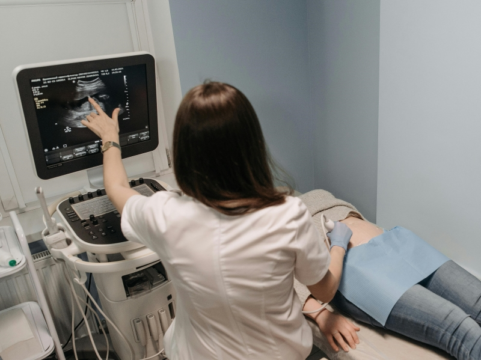
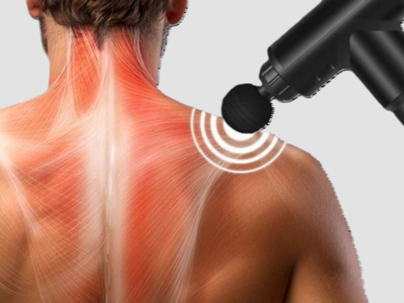

Найбільш сучасний і ефективний метод діагностики новоутворень
шкіри. Дерматоскопія дозволяє диференціювати тип пухлини
(доброякісний це чи злоякісний новоутвір), а також обстежити
інші захворювання шкіри і провести діагностику бородавок,
папілом, пігментних невусів.

Ультразвукова діагностика (УЗД)
УЗД — безпечний та ефективний метод діагностики, що використовує ультразвук для отримання зображень органів і тканин. Дозволяє швидко оцінити їх стан, виявити патології, запалення чи новоутворення. Застосовується для обстеження органів черевної порожнини, серця, судин, суглобів, щитоподібної залози та органів малого тазу.

Перкусійний масаж
Новітній метод глибокого масажу тканин усього тіла, що знімає
напругу, допомагає розслабити м'язи, зняти біль і скутість.
Завдяки багатофункціональній здатності можливо застосовувати на
будь-яких зонах тіла і в такий спосіб домагатися максимальної
ефективності.
Лабораторія
Лабораторія пропонує загальні аналізи крові та сечі, біохімічні, гормональні, генетичні, імунологічні тести та діагностику інфекцій. Сучасне обладнання і досвідчені фахівці забезпечують точні результати для швидкого діагнозу та ефективного лікування.